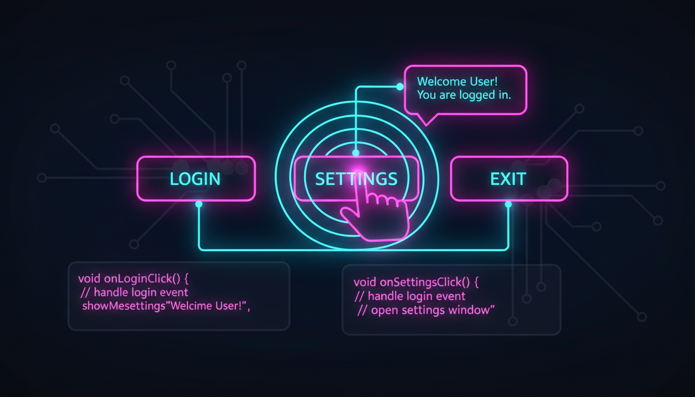

Button клас, Click подія, дизайнер, Enabled, Tag

// Створення кнопки
Button^ btn = gcnew Button();
btn->Text = "Натисни мене";
btn->Location = Point(100, 50);
btn->Size = Size(150, 40);
btn->BackColor = Color::FromArgb(0, 120, 255);
btn->ForeColor = Color::White;
btn->FlatStyle = FlatStyle::Flat;
btn->FlatAppearance->BorderSize = 0;
// Обробник події Click
btn->Click += gcnew EventHandler(this, &MyForm::OnButtonClick);
// Метод обробника
void OnButtonClick(Object^ sender, EventArgs^ e) {
Button^ clickedBtn = safe_cast<Button^>(sender);
MessageBox::Show("Ви натиснули: " + clickedBtn->Text);
}// Спільний обробник для кількох кнопок
btn1->Click += gcnew EventHandler(this, &MyForm::Button_Click);
btn2->Click += gcnew EventHandler(this, &MyForm::Button_Click);
btn3->Click += gcnew EventHandler(this, &MyForm::Button_Click);
void Button_Click(Object^ sender, EventArgs^ e) {
Button^ btn = (Button^)sender;
switch (Convert::ToInt32(btn->Tag)) {
case 1: /* Дія 1 */ break;
case 2: /* Дія 2 */ break;
case 3: /* Дія 3 */ break;
}
}